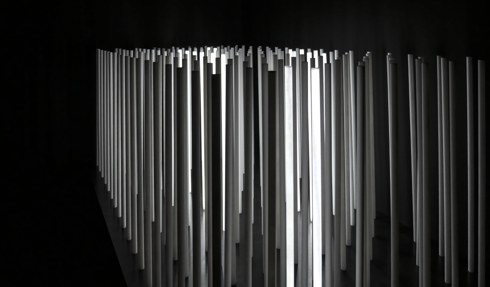

Created with Wild Flag Studios
I assisted with the fabrication and installation of Wild Flag Studio's piece Footprints exhibited at the 58th Venice Biennale.
Driven by immigration data, the interactive sculpture visualizes mass migrations and the movement of bodies using light and sound - creating an impactful representation of the number of people journeying across borders every minute.